Atari 2600 Polyvox "Darth Vader" (Posse de Vitória Maria)

Atari 2600
Atari 2600, originalmente lançado em 1977 pelo nome Atari VCS
(Video Computer System).
O console foi concebido pelos engenheiros da Atari Inc.
(liderados por Jay Miner) para levar a experiência dos Arcades
diretamente para os televisores domésticos.
Seu grande diferencial histórico foi a popularização do uso
de cartuchos ROM removíveis, substituindo o formato de jogo
fixo na memória utilizado em gerações anteriores como o
Tele-Jogo, RadioSchack TV ScoreBoard e o Pong.
Mercado Nacional
Devido a lei da Reserva de Mercado (Política Nacional de
Informática) na década de 1980 que proibia a importação de
eletrônicos e computadores estrangeiros, vários consoles como
o NES (Nintendo Entertainment System) e o Master System da Sega
(que futuramente em parceria com a TecToy foi lançado no Brasil
até meados de 2020).
Por outro lado, a Atari se aliou com a brasileira Polyvox em
Setembro de 1983 para produzir o Atari 2600 na Zona Franca de
Manaus (Amazônia).
Contexto Histórico
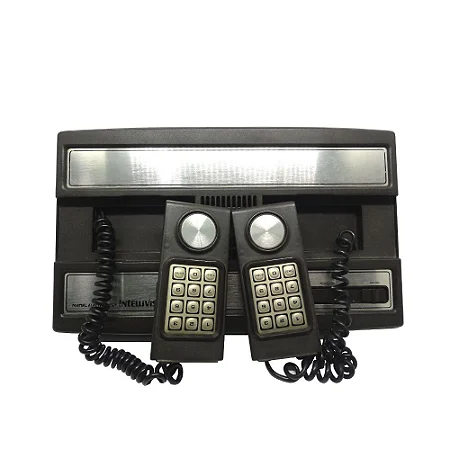
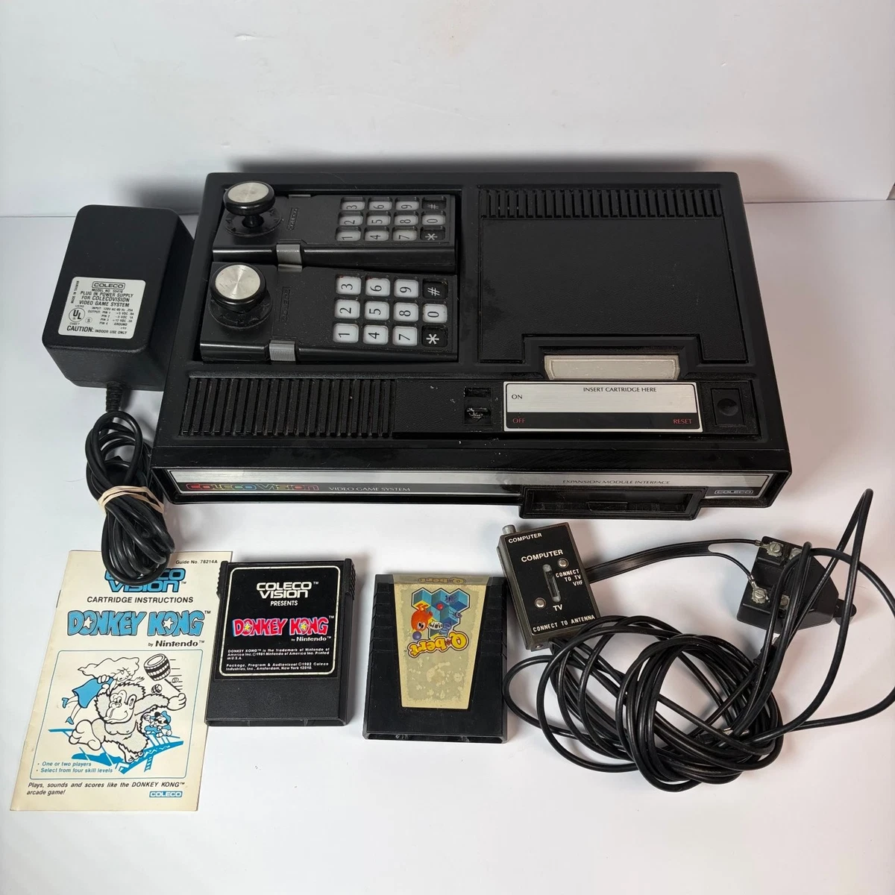
No final dos anos 70 e início dos anos 80 várias empresas,
motivadas pelo sucesso estrondoso da Atari com seu sistema,
decidiram criar seus consoles na época, surgindo rivais de
mercado, com os mais famosos sendo o Intellivision e o ColecoVision,
mas houve inúmeros consoles na época, vindos de todo tipo de empresa,
das mais famosas até as desconhecidas.
Ambos os consoles eram infames por seus teclados numéricos,
considerados excessivos para a simplicidade dos jogos. Mesmo com
as críticas, a Atari decidiu que seu próximo console, o Atari 5200,
teria um controle com o mesmo tipo de teclado numérico, mas inovou
com botões de Pause, algo novo na época.
Com todos esses consoles diferentes nas lojas sendo comercializados
simultaneamente, a indústria dos VideoGames de casa acabou ficando
com tantos produtos e opções que acabou desestimulando os clientes
e compradores, gerando um enorme prejuízo para várias empresas,
o que acabou causando o Crash dos Videogames de 1983 nos Estados Unidos.
Jogos e Acessórios
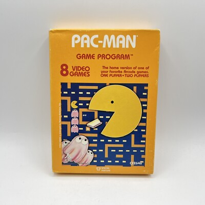
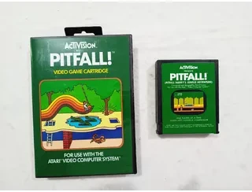
Um dos maiores diferenciais do Atari eram seus cartuchos, oque permitiam ser jogados centenas de jogos no mesmo console, durante sua vida vários jogos foram lançados, muitos bons como: Pitfall!, H.E.R.O., Missile Command, etc.
Porém, é inevitável que haja jogos que geram desgosto e ficam infames pela sua ruindade, algumas como Pac-Man e seu terrível port para Atari 2600, E.T. The Extra-Terrestrial, considerado o pior jogo do console ou até mesmo O Pior Jogo De Todos Os Tempos.
Os jogos vinham em caixas com artes, manuais e outros documentos, adquirindo um enorme valor histórico, já que a maioria das pessoas eventualmente jogavam fora, perdiam ou destruiam esses itens.
Modelos e variações (Oficiais e Não-Oficiais)
Durante e até mesmo após a sua fabricação, o Atari 2600 teve
várias versões e modelos. Cópias também foram feitas; algumas
vieram e foram, mas certas cópias ficaram marcadas.
Sua fabricação no Brasil pela Polyvox nos rendeu os modelos base
"Darth Vader", o primeiro modelo a ostentar o texto "Atari 2600"
na frente.
A brasileira Dynacom fez o seu clone de Atari 2600 chamado
"Dynavision". Suas versões posteriores (2, 3 e 4) são clones do
NES/Famicom, sendo apelidadas de "Famiclones".
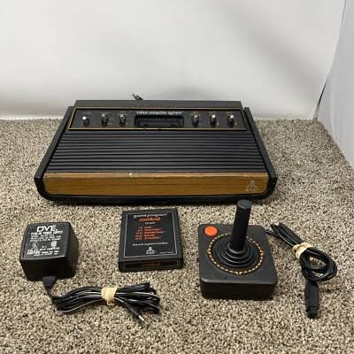
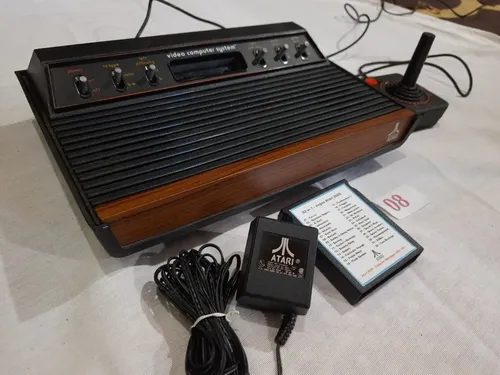
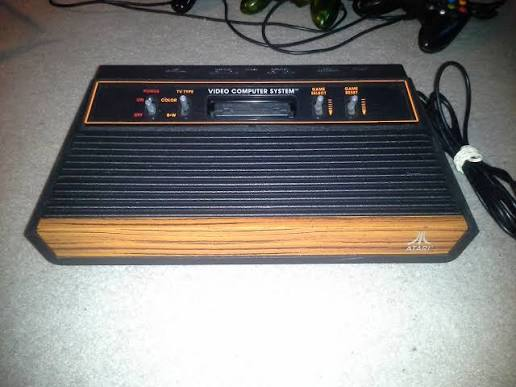
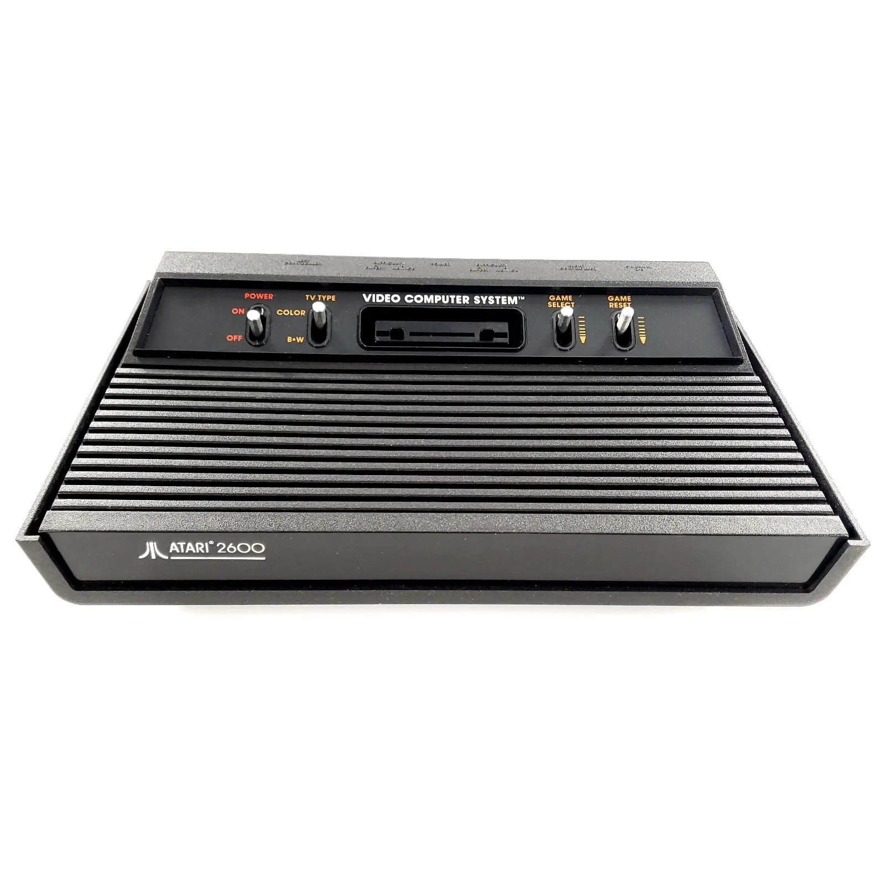
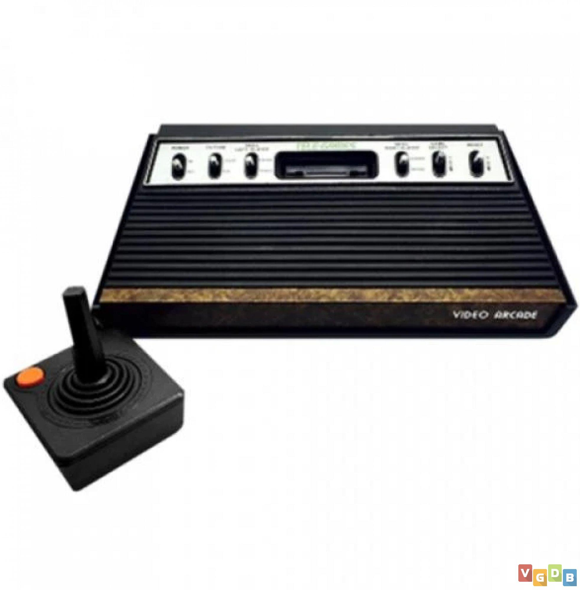
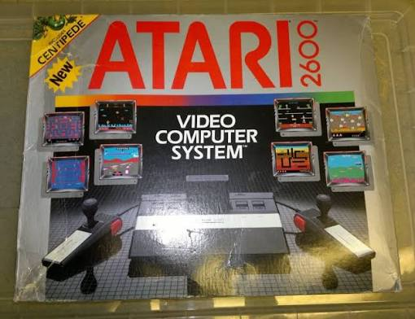
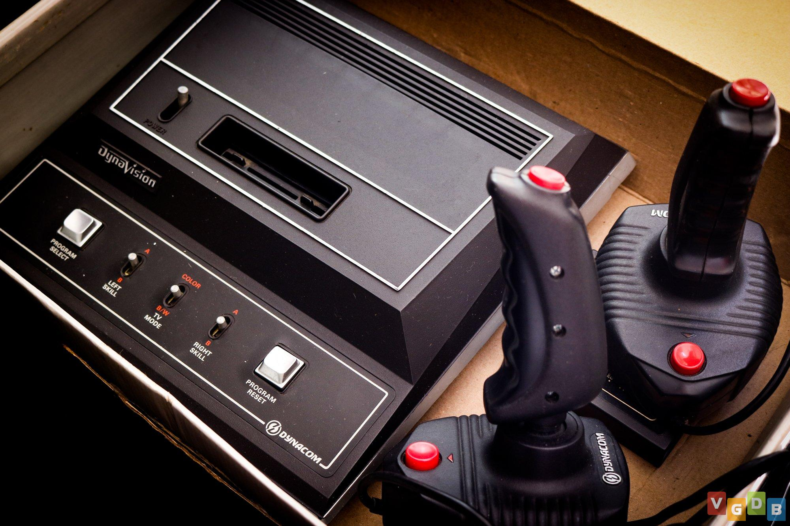
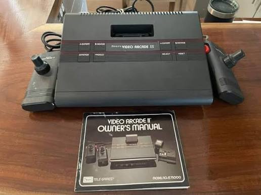